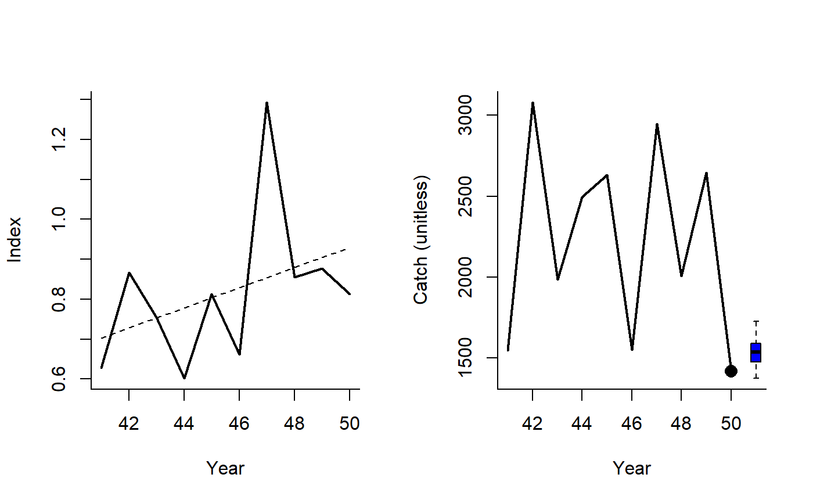
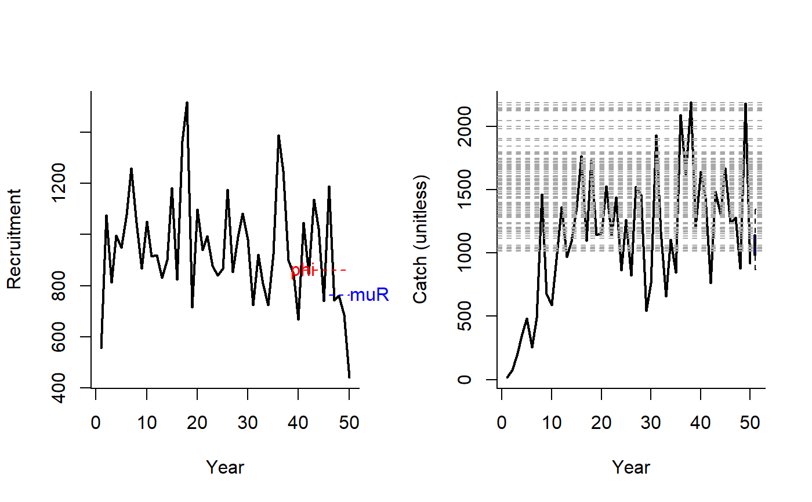

SBT1.RdAn MP that makes incremental adjustments to TAC recommendations based on the apparent trend in CPUE, a an MP that makes incremental adjustments to TAC recommendations based on index levels relative to target levels (BMSY/B0) and catch levels relative to target levels (MSY).
SBT1(x, Data, reps = 100, plot = FALSE, yrsmth = 10, k1 = 1.5, k2 = 3, gamma = 1) SBT2(x, Data, reps = 100, plot = FALSE, epsR = 0.75, tauR = 5, gamma = 1)
| x | A position in a data-limited methods data object |
|---|---|
| Data | A data-limited methods data object |
| reps | The number of stochastic samples of the MP recommendation(s) |
| plot | Logical. Show the plot? |
| yrsmth | The number of years for evaluating trend in relative abundance indices |
| k1 | Control parameter |
| k2 | Control parameter |
| gamma | Control parameter |
| epsR | Control parameter |
| tauR | Control parameter |
An object of class Rec with the TAC slot populated with a numeric vector of length reps
For SBT1 the TAC is calculated as:
$$\textrm{TAC}_y =
\left\{\begin{array}{ll}
C_{y-1} (1+K_2\lambda) & \textrm{if } \lambda \geq 0 \\
C_{y-1} (1-K_1\lambda^\gamma) & \textrm{if } \lambda < 0\\
\end{array}\right.
$$
where \(\lambda\) is the slope of index over the last yrmsth years, and
\(K_1\), \(K_2\), and \(\gamma\) are arguments to the MP.
For SBT2 the TAC is calculated as:
$$\textrm{TAC}_y = 0.5 (C_{y-1} + C_\textrm{targ}\delta)$$
where \(C_{y-1}\) is catch in the previous year, \(C_{\textrm{targ}}\)
is a target catch (Data@Cref), and :
$$\delta=
\left\{\begin{array}{ll}
R^{1-\textrm{epsR}} & \textrm{if } R \geq 1 \\
R^{1+\textrm{epsR}} & \textrm{if } R < 1 \\
\end{array}\right.
$$
where \(\textrm{epsR}\) is a control parameter and:
\(R = \frac{\bar{r}}{\phi}\)
where \(\bar{r}\) is mean recruitment over last tauR years and \(\phi\)
is mean recruitment over last 10 years.
This isn't exactly the same as the proposed methods and is stochastic in this implementation. The method doesn't tend to work too well under many circumstances possibly due to the lack of 'tuning' that occurs in the real SBT assessment environment. You could try asking Rich Hillary at CSIRO about this approach.
SBT1: Simple SBT MP
SBT2: Complex SBT MP
See Data for information on the Data object
SBT1: Cat, Ind, Year
SBT2: Cat, Cref, Rec
See Online Documentation for correctly rendered equations
http://www.ccsbt.org/site/recent_assessment.php
SBT1(1, Data=DLMtool::SimulatedData, plot=TRUE)#> TAC (median) #> 1969.751SBT2(1, Data=DLMtool::SimulatedData, plot=TRUE)#> TAC (median) #> 2259.197